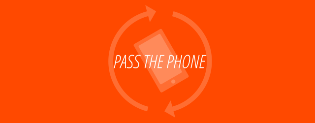

The Project
You're sitting with a group of friends, and yet everyone is on their phone. No social interaction whatsoever. Has this ever happened to you? Pass the Phone is a mobile game whose goal may seem contradictory at first: to get people off their phone! The game only needs one person's phone, which gets passed around as people ask questions and answer them as a group.
Members
Pass the Phone is a Human-Computer Interaction project by:
William Bouchard - william.bouchard@mail.mcgill.ca
Olivier Eydt - olivier.eydt@mail.mcgill.ca
Samuel Roux - samuel.roux@mail.mcgill.ca
McGill University, Fall 2017
Index
On this site, you will find the step-by-step procedure that was followed to reach a presentable beta of the project, inspired by HCI development guidelines. The steps were as follows:
- Project Proposal: The initial idea behind the project.
- Low-Fidelity Prototype: A new direction for the project, with the same goal but different means, and the first rudimentary paper prototype.
- High-Fidelity Prototype: The first software prototype of the game.
- Formative Feedback: The results of an exercise in which we evaluated the hi-fi prototype of another team.
- Alpha Prototype: The next version of the game's software prototype, incorporating feedback from a testing team.
- Beta Prototype: The final version of the game in the scope of the class, also affected by further testing.
Resources
Below are the most recent versions of the user manual, the application, and a link to our Github repository. You may also find these on the page for our beta prototype.
User manual
Android build of the beta prototype (.apk)
Github repository